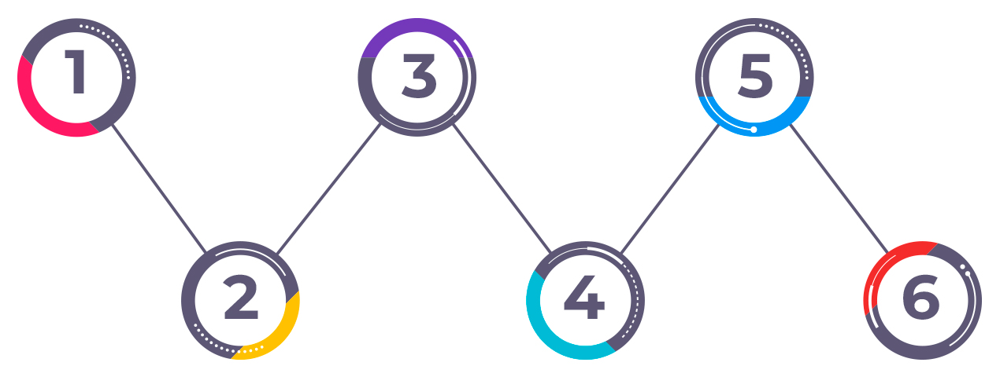

Nesta aula, você aprenderá a aplicar conceitos éticos e
jurídicos a questões relacionadas à saúde digital. Vamos abordar este tema
destacando a importância da privacidade, segurança dos dados na implementação de
tecnologias de saúde e a humanização dos algoritmos e soluções tecnológicas.
Objetivos
de
aprendizagem
Ao final desta aula, esperamos que você seja capaz de:
Reconhecer a importância da Ética e Bioética para as ações em
Vigilância em Saúde no contexto da transformação digital.
Introdução
Nesta aula, vamos explorar as fundações da Vigilância Digital
em Saúde. Prepare-se: o que antes chamávamos de notificação agora é um fluxo
contínuo de dados. Vamos entender como saímos das fichas de papel para os algoritmos
preditivos e por que a tecnologia não é apenas um “meio”, mas um agente que redefine
a nossa ética profissional.
Este material foi estruturado para servir como o guia para
sua prática na fronteira entre a tecnologia, a saúde 4.0 e o cuidado. Reconhecemos
que a inovação na saúde não é neutra, mas um artefato humano carregado de valores
morais. A Vigilância em Saúde, pilar da proteção coletiva, atravessa uma metamorfose
digital que expande fronteiras, mas também cria vulnerabilidades. Nosso objetivo é
fundamentar a prática profissional na intersecção entre o Direito e a Bioética. Por
isso, te convidamos para essa jornada reflexiva!
Fundamentos da Vigilância em Saúde na Era
Digital
Para entendermos onde estamos, precisamos olhar para o
espelho retrovisor. A Vigilância em Saúde já foi, por alguns, compreendida como
o monitoramento contínuo de eventos relacionados à saúde para o planejamento de
intervenções. Vamos relembrar como era o processo no modelo analógico antes de
abordamos como a Vigilância em saúde evoluiu na era digital? Clique em cada etapa abaixo para acompanhar:
Recurso Interativo
O paciente chegava à unidade de saúde.
Um profissional preenchia uma ficha de
notificação compulsória.
Esses dados seguiam até as bases
centrais, muitas vezes por um caminho lento.
Na atualidade, vivemos uma transição impulsionada pela
Transformação Digital. A vigilância deixou de ser apenas epidemiológica
tradicional para se tornar Vigilância Digital, que se relaciona com campos como
a Infodemiologia.
E o que isso quer dizer na prática?
Isso significa que agora as Tecnologias de Informação e
Comunicação (TICs) são utilizadas para coletar, analisar e interpretar dados em
tempo real.
A Organização Mundial da Saúde (OMS), em sua Estratégia
Mundial sobre Saúde Digital (2020-2025), define essa nova disciplina como aquela
que abrange o uso de tecnologias avançadas, como Big Data, Inteligência
Artificial (IA) e Internet of Things (IoT) ou Internet das Coisas, para
melhorar não apenas os desfechos clínicos individuais, mas a própria gestão
populacional de forma proativa. Isso muda a postura reativa, de “esperar” o
registro da doença, para uma postura dinâmica, que antecipa surtos e moderniza
os serviços sanitários.
O Fenômeno da Vigilância Ubíqua e a
“Datificação” da Vida
Aqui, trazemos o conceito da ubiquidade. Diferente da
vigilância tradicional, que se restringia ao ambiente clínico, a vigilância
digital é onipresente. Ela opera através de fluxos de dados gerados fora do
ambiente hospitalar tradicional. Estamos falando dos pacientes que usam
wearables (dispositivos vestíveis) como smartwatches e anéis inteligentes. Esses
dispositivos podem monitorar alguns dados de saúde 24 horas por dia, veja:
Frequência cardíaca
Padrões de sono
Níveis de estresse
Mudanças hormonais
Muitos desses dispositivos são questionáveis, pois
permitem que empresas tenham acesso a dados sensíveis sem políticas claras de
uso. A “datificação” permite modelos preditivos de alta precisão, mas introduz o
risco de uma vigilância invisível que pode comprometer a dignidade humana se não
houver critérios claros de transparência.
Para proteger esse fluxo, temos a Lei Geral de Proteção de Dados (LGPD - Lei nº 13.709/2018). Ela classifica dados de saúde como sensíveis devido ao seu alto potencial discriminatório. A proteção desses dados é considerada hoje uma premissa fundamental de qualquer política pública de saúde digital no Brasil.
A LGPD Como Pilar da Confiança na Saúde
Digital
No Brasil, a LGPD é a principal ferramenta jurídica para
proteger os direitos fundamentais de liberdade e privacidade. Conforme
mencionamos no tópico anterior, essa lei classifica os dados de saúde como
sensíveis, isso significa que o tratamento dessas informações oferece riscos
elevados de discriminação e, portanto, exige salvaguardas rigorosas. Por isso, é
essencial que você conheça os três princípios básicos que regem o tratamento
desses dados de acordo com a LGPD. Vamos lá?
Recurso Interativo
Legenda: Princípios básicos para o tratamento de dados de
saúde de acordo com a LGPD Fonte: Campus Virtual Fiocruz
Embora o consentimento seja a regra geral, o Poder
Público pode tratar dados sensíveis sem consentimento explícito em hipóteses
como o cumprimento de obrigações legais (notificações compulsórias), execução de
políticas públicas ou para a tutela da saúde. No entanto, a ausência de
consentimento não exclui o dever de transparência. É indispensável que os
gestores realizem o Relatório de Impacto à Proteção de Dados Pessoais (RIPD) em
projetos de vigilância digital, para avaliar riscos e documentar as medidas de
segurança adotadas. A aplicação correta da LGPD garante a autodeterminação
informativa, permitindo que o cidadão mantenha o controle sobre sua privacidade
em um mundo cada vez mais monitorado.
IA e Dilemas Éticos na Saúde
Para dialogar com as equipes de tecnologia, é fundamental
compreender os conceitos que sustentam a IA, que se baseia na capacidade de
algoritmos aprenderem a partir de dados para executar tarefas de forma
automatizada. Vamos conhecer esses conceitos?
Recurso Interativo
Machine Learning (aprendizado de máquina)
O computador detecta padrões sem ser explicitamente programado para cada passo.
Deep Learning
Usa redes neurais inspiradas no sistema nervoso central para processar dados heterogêneos, como imagens de retina ou registros genômicos, que abordaremos a seguir.
Clique nos círculos — Deep Learning é um subtipo de Machine Learning.
É importante compreender que a IA não é uma entidade
única, mas um ramo da ciência da computação e da estatística que utiliza modelos
para realizar algumas tarefas. Na Vigilância Digital, o conceito mais relevante
é o aprendizado de máquina (Machine Learning – ML). Diferente da
programação tradicional, onde uma pessoa escreve regras explícitas (exemplo: “se
a febre for > 38ºC, notifique”), o ML permite que os computadores detectem
padrões em volumes massivos de informação e aprendam a tomar decisões ou fazer
previsões sem serem explicitamente programados para cada passo.
Nesse campo, destaca-se o deep learning
(aprendizado profundo), um subtipo de ML. Essa tecnologia é particularmente
promissora para a vigilância, pois consegue aprender relações extremamente
complexas a partir de dados heterogêneos, como registros médicos eletrônicos,
imagens radiológicas e até dados de sensores vestíveis (wearables).
Contudo, esses algoritmos estão em constante mudança à medida que recebem novos
dados de treinamento, o que torna sua regulação um desafio, pois é como tentar
atingir um alvo em contínuo movimento.
O grande dilema ético e jurídico com o uso de IA é a
explicabilidade. Muitos sistemas de IA são “caixas-pretas”
(black-boxes), como por exemplo: eles chegam a um diagnóstico preciso,
mas é humanamente impossível compreender a lógica interna para chegar a esse
resultado. Diante disso, algumas dúvidas surgem:
Como garantir a autonomia do paciente e a responsabilidade
jurídica do profissional da saúde se ninguém sabe como a máquina chegou
àquela resposta?
Quem é a responsável diante de eventual erro?
Um/a médico/a ou enfermeiro/a pode exercer sua responsabilidade
profissional e garantir o dever de informar se não compreende a lógica que a
ferramenta está usando?
É fundamental compreender que a IA na saúde deve ser
utilizada para potencializar as capacidades humanas, em vez de substituí-las
inteiramente. No cotidiano clínico, isso significa que, embora um algoritmo
possa analisar milhares de imagens de radiologia para detectar sinais de
pneumonia ou retinopatia diabética com precisão superior à humana, ela deve
atuar como uma segunda opinião ou como um sistema de triagem que ajuda o médico
a priorizar casos urgentes. A literatura chama isso de abordagem
“Human-in-the-Loop” (Humano no Circuito, supervisão humana).
Esse modelo integra a IA como suporte à decisão, mas
mantém a autoridade final da decisão nas mãos de profissionais de saúde
qualificados. Essa supervisão humana é obrigatória para suavizar o viés de
automação, que ocorre quando confiamos excessivamente em saídas automatizadas e
deixamos de perceber erros óbvios do sistema.
Logo, sistemas de alto risco, como triagem em
emergências, exigem obrigatoriamente a supervisão humana para validar decisões e
garantir que a sensibilidade ética não seja substituída por cálculos puramente
estatísticos. A explicabilidade algorítmica envolve o direito do/a paciente e
do/a profissional de saber como as decisões que afetam sua vida e saúde são
tomadas. Sem transparência, a autonomia do/a paciente é comprometida e a
responsabilização jurídica em casos de erro torna-se um vazio legal perigoso.
Nesse contexto, surgiu o termo Algorética, que designa um
campo da ética aplicada que não foca apenas no comportamento do usuário da
tecnologia, mas na integridade, transparência e justiça inscritas no próprio
desenvolvimento dos algoritmos. No ecossistema da Saúde 4.0, a Algorética propõe
uma abordagem sistêmica para garantir que o paciente permaneça no centro do
cuidado, promovendo a confiança mútua entre organizações, profissionais e
cidadãos.
Para enfrentar os desafios que mencionamos em relação ao
uso da IA na saúde, a Organização Mundial da Saúde (OMS) estabeleceu seis
princípios fundamentais para a governança da IA na saúde, destacando a
necessidade de transparência e inteligibilidade. Vamos conhecê-los?
Recurso Interativo

Legenda: Princípios fundamentais para a governança da IA
na saúde Fonte: Campus Virtual Fiocruz
Em sistemas de alto risco, como triagens de emergência ou alocação de recursos escassos, a intervenção humana qualificada é obrigatória para validar a decisão do algoritmo, assegurando que a sensibilidade ética não seja substituída por cálculos estatísticos.
Um dos pontos mais sensíveis da sua atuação será exigir
que essas ferramentas sejam auditáveis. A auditabilidade permite que inspetores
internos ou externos avaliem os dados, os algoritmos e os processos de design
para garantir que não haja erros sistemáticos ou discriminação. Quando um
paciente é prejudicado, por exemplo, ao ter um transplante negado ou uma vaga de
UTI recusada por um cálculo algorítmico, ele deve ter o direito à explicação e o
direito de contestar a decisão. Como os sistemas de saúde atuais são
interdependentes, a tendência é caminhar para uma responsabilidade conjunta
(joint accountability) entre os profissionais de saúde e a equipe de
desenvolvimento da IA.
Por fim, devemos romper com o mito da neutralidade da IA. Longe de serem árbitros matemáticos imparciais, os algoritmos são, em essência, artefatos sociotécnicos que carregam as visões de mundo, as prioridades e, inevitavelmente, os preconceitos de seus criadores. Quando operam sobre bases de dados que refletem desigualdades históricas, os sistemas de IA não apenas replicam o passado, mas o automatizam e o amplificam em escala exponencial.
Se os dados de treinamento contêm padrões de exclusão, seja no sistema de justiça, no acesso à saúde ou no mercado de trabalho, o algoritmo aprenderá que esses padrões são a “regra” a ser seguida. Isso cria um fenômeno conhecido como viés algorítmico (algorithmic bias), onde o racismo estrutural e outras formas de discriminação são camuflados sob uma aura de objetividade técnica. O risco reside na “matematização da desigualdade”: quando uma decisão discriminatória é proferida por uma máquina, ela tende a ser menos questionada do que se fosse tomada por um humano, dificultando a contestação e a responsabilização.
Portanto, a governança da IA exige mais do que correções
técnicas de código, ela requer uma postura ética e política. É necessário
implementar mecanismos de transparência e explicabilidade, garantindo que as
decisões algorítmicas possam ser auditadas e que existam instâncias de revisão
humana para impedir que a inovação tecnológica se torne um instrumento de
retrocesso em direitos fundamentais. A neutralidade, neste contexto, não é um
dado, mas uma ilusão que deve ser substituída pelo compromisso com a justiça
algorítmica.
Aplicando e Aprofundando Alguns Conceitos
Neste tópico, vamos falar sobre o uso secundário de dados
para o treino de IA, Governança e acordos de partilha de dados, anonimização e
pseudonimização. Acompanhe a história a seguir:
Imagine que um prestador de serviços de saúde acumulou, ao longo de dez anos, uma base de dados robusta com Registros de Saúde Eletrônicos (RSE) de pacientes com doenças cardíacas.
Uma startup de biotecnologia propõe uma parceria para utilizar esses dados históricos para treinar um algoritmo de IA capaz de prever infartos com 48 horas de antecedência.
O hospital decide partilhar os dados, argumentando que o benefício para a saúde pública é imenso. No entanto, surge um debate sobre se os pacientes (que forneceram os dados originalmente para o seu próprio tratamento) deveriam ter sido consultados sobre esta nova finalidade de investigação e desenvolvimento comercial.
E aí, qual a sua opinião?
Leia os conceitos a seguir, e depois reflita sobre a
situação:
É necessário obter um novo consentimento de cada paciente para usar os seus dados históricos em investigação de IA, ou o “interesse público” é suficiente?
Este é um ponto de equilíbrio delicado. Geralmente, as legislações permitem o uso de dados para fins de investigação científica e saúde pública sem um novo consentimento individual, desde que sejam aplicadas medidas de segurança rigorosas (como a anonimização). No entanto, se o desenvolvimento tiver um fim puramente comercial pela empresa parceira, a fundamentação ética exige transparência.
Nesse caso, o hospital deve, no mínimo, fornecer um aviso público sobre a política de uso de dados para investigação e, preferencialmente, oferecer um mecanismo de opt-out (o direito de o paciente solicitar que os seus dados não sejam incluídos em estudos futuros), respeitando o princípio da autodeterminação informativa.
Quais as salvaguardas contratuais o hospital deve exigir para garantir que a empresa de tecnologia não utilize os dados para outros fins?
O hospital, como controlador dos dados, deve estabelecer um Acordo de Partilha de Dados (Data Sharing Agreement - DSA). Este contrato deve ser explícito quanto à limitação da finalidade: a empresa fica proibida de usar os dados para qualquer outro fim que não seja o treino do algoritmo específico, de tentar identificar os pacientes ou de partilhar a base de dados com terceiros.
Além disso, devem ser previstos mecanismos de auditoria técnica, onde o hospital pode verificar se os protocolos de segurança estão sendo cumpridos. A governança ética exige que o valor gerado (o algoritmo) também beneficie o sistema público de saúde, garantindo o princípio do retorno social da investigação.
No contexto da partilha de dados com terceiros, qual destes processos oferece maior proteção jurídica e por quê?
A anonimização é o processo técnico que remove de forma irreversível a ligação entre o dado e o indivíduo, fazendo com que o dado deixe de ser considerado "pessoal" para fins de leis como a LGPD ou o RGPD. Já a pseudonimização substitui identificadores (como o nome) por códigos, mas permite a reidentificação se houver acesso a uma chave suplementar.
Para fins de treino de IA por empresas terceiras, a anonimização é o padrão de ouro: ela elimina o risco de violação da privacidade, permitindo que os dados sejam usados de forma ética para a inovação sem expor a intimidade do paciente. Se a anonimização for eficaz, o dado torna-se um “dado estatístico”, facilitando a colaboração científica.
Reflexão
A tecnologia nos oferece uma lupa potente para enxergar a saúde das populações, mas a bioética nos lembra que essa lente pode ter distorções. Ao utilizar um algoritmo em sua prática, pergunte-se: “Eu consigo explicar ao paciente por que esta ferramenta recomenda este caminho?”. A resposta a essa pergunta é o que separa a inovação responsável da tecnocracia.
A seguir, acompanhe duas situações que ilustram, na
prática, os princípios éticos, jurídicos e tecnológicos que abordamos nesta
aula.
Em resposta a uma pandemia, uma administração municipal desenvolve o sistema "Vigilância Digital". O aplicativo utiliza geolocalização (GPS) e Bluetooth para registrar contatos e deslocamentos dos cidadãos. O sistema é centralizado: todos os registros são enviados para um servidor da prefeitura. Embora o objetivo inicial seja notificar pessoas expostas ao vírus, o governo decide manter esses dados "para estudos futuros e planejamento urbano", sem definir uma data para a exclusão das informações e sem separação clara entre a base de dados da saúde e outros departamentos governamentais.
Esse cenário ilustra uma violação direta ao princípio da limitação da finalidade, previsto na LGPD. O tratamento de dados pessoais deve ser realizado para propósitos legítimos, específicos, explícitos e informados ao titular. Como os cidadãos forneceram seus dados para fins de controle epidemiológico, qualquer uso posterior para fins comerciais, de marketing ou de planejamento urbano configura um desvio de finalidade. Na saúde digital, essa fronteira é crítica para a manutenção da confiança pública: quando o usuário suspeita que seus dados de saúde poderão ser utilizados para outros fins, ele deixa de alimentar o sistema, comprometendo a própria efetividade da vigilância coletiva.
Outro ponto sensível nesse caso é a ausência de critério para o descarte dos dados. Pela LGPD, dados pessoais não devem ser armazenados indefinidamente; o parâmetro técnico correto é o exaurimento da finalidade. No contexto de uma epidemia, os dados de geolocalização perdem sua utilidade sanitária após o período de incubação do vírus ou após o decreto de encerramento da emergência de saúde pública. Manter registros de GPS por tempo indeterminado cria riscos desnecessários de vazamento e abre caminho para formas de vigilância estatal abusiva. O protocolo adequado deve prever a exclusão automática ou a anonimização irreversível dos dados assim que o objetivo sanitário for alcançado.
Um hospital de alta complexidade implementa um sistema de suporte à decisão clínica baseado em IA para gerenciar a fila da UTI. O algoritmo foi treinado com milhões de prontuários de hospitais privados dos EUA e da Europa. Na prática, o sistema passa a pontuar melhor pacientes com planos de saúde premium ou maior escolaridade, sob a lógica de que esses perfis indicariam "melhor rede de apoio familiar" e "maior adesão ao tratamento pós-alta". Como resultado, pacientes da rede pública com o mesmo quadro clínico são sistematicamente preteridos pela máquina.
Esse caso evidencia o fenômeno do viés algorítmico. O algoritmo não possui intenção própria: ele aprende padrões a partir dos dados com os quais foi treinado. Quando esses dados refletem uma sociedade em que pessoas com maior renda têm historicamente melhor acesso à saúde, a IA passa a interpretar a condição socioeconômica como um preditor de sucesso clínico. O resultado é a discriminação sistemática de grupos vulneráveis, não por critérios médicos, mas por critérios sociais — o que fere diretamente o princípio da não discriminação e transforma a tecnologia em um instrumento de amplificação de desigualdades históricas.
A esse problema se soma a questão da explicabilidade. Em contextos de alto risco, como a triagem de UTI, sistemas inexplicáveis são eticamente inaceitáveis. O princípio da explicabilidade exige que as decisões da IA sejam auditáveis: o/a profissional de saúde precisa saber se a prioridade foi atribuída com base na saturação de oxigênio do paciente ou no seu endereço residencial. Sem essa transparência, erros sistêmicos não podem ser corrigidos, e a segurança do paciente fica comprometida.
Por fim, o caso reforça a importância do conceito de Human-in-the-loop (Humano no Circuito). O principal risco ético de delegar a decisão integralmente à máquina é a perda de responsabilização (accountability): diferentemente de um profissional de saúde, o algoritmo não pode ser responsabilizado juridicamente. O modelo Human-in-the-loop garante que a IA funcione como suporte à decisão, mas que a deliberação ética e clínica final permaneça com o/a profissional qualificado/a, capaz de avaliar nuances humanas e contextos sociais que os dados do algoritmo não conseguem capturar.
Atividade
Questão 01 de 02
Acertos: 0
Selecione uma opção para confirmar
sua
resposta.
Resumo da aula
Nesta aula, você viu que a transformação digital na
Vigilância em Saúde é irreversível. Contudo, sua legitimidade depende do
respeito aos direitos fundamentais e aos marcos éticos da bioética social. O
profissional de saúde deve atuar como um mediador técnico e ético, garantindo
que a tecnologia seja sempre um instrumento de promoção da vida e redução de
iniquidades. A ética, afinal, deve ser a base de toda inovação.
Agora, reflita sobre as questões, que disponibilizamos a
seguir, a partir dos conhecimentos que você construiu, bem como da sua área de
trabalho e atuação.
Quais aplicações de destaque e desafios da Inteligência
Artificial (IA) na saúde pública?
Quais são os principais usos da IA na vigilância epidemiológica
e previsão de doenças?
Que princípios éticos e considerações são cruciais na
implementação da IA? Que desafios e considerações éticas a inteligência
artificial apresenta para a saúde pública?
Você concluiu esta aula, continue se
empenhando nos seus estudos. Siga para o próximo módulo!